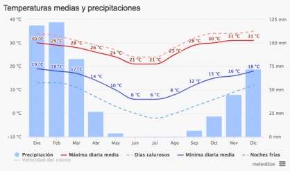
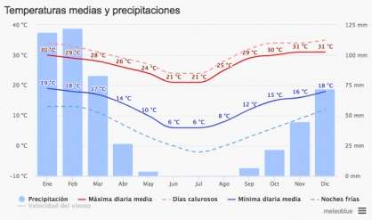

ENERO
Las temperaturas mínimas diarias son de alrededor de 1°C, rara vez bajan menos de -5°C o exceden 7°C
FEBRERO
Las temperaturas máximas diarias aumentan1°C, de 10°C a 11°Cy rara vez bajan a menos de 6°C o exceden 16°C
Las temperaturas mínimas diarias son de alrededor de 1°C, rara vez bajan menos de -5°C o exceden 7°C
Las temperaturas máximas diarias aumentan1°C, de 10°C a 11°Cy rara vez bajan a menos de 6°C o exceden 16°C